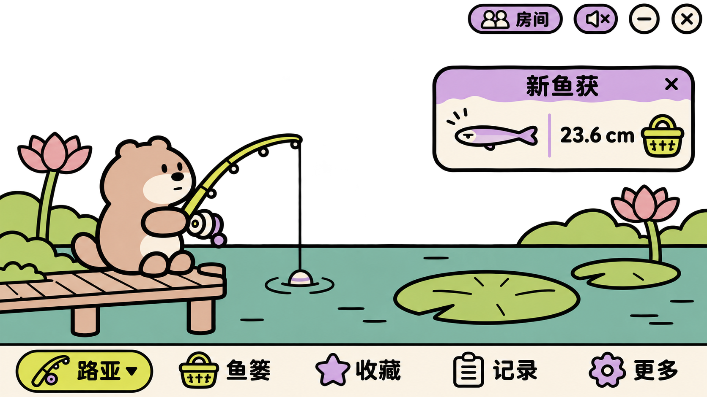
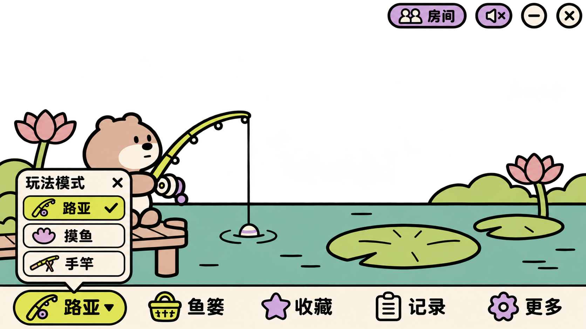
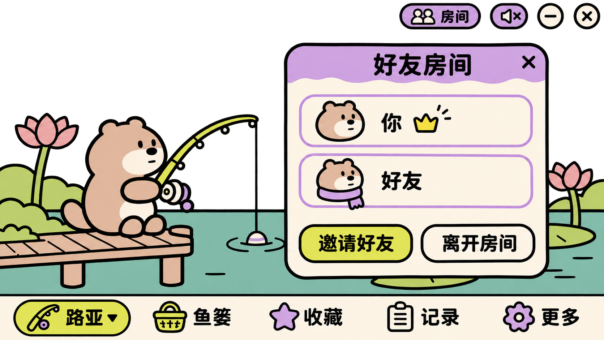
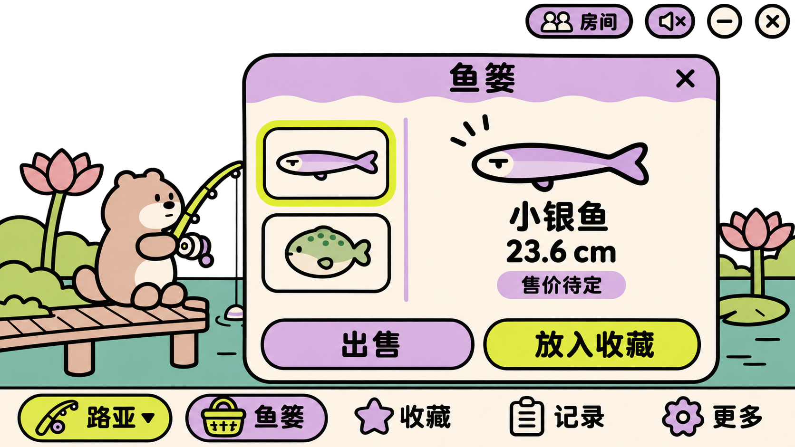
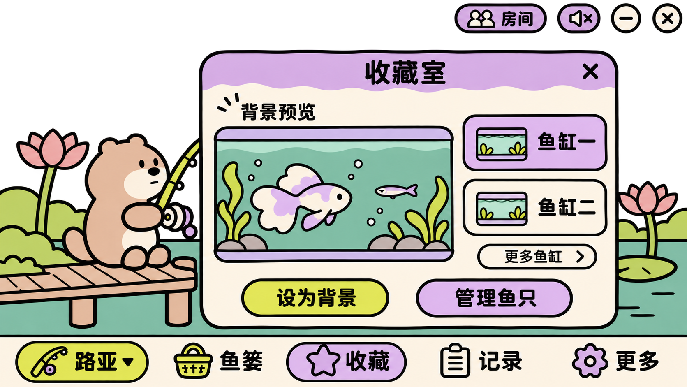
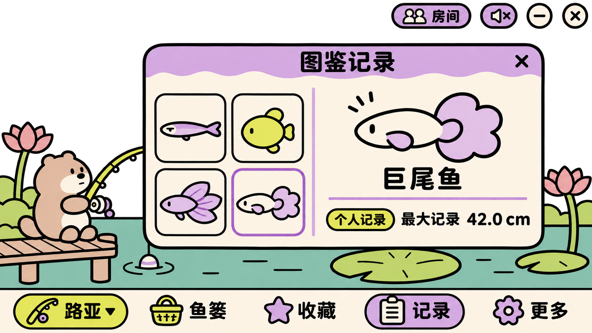
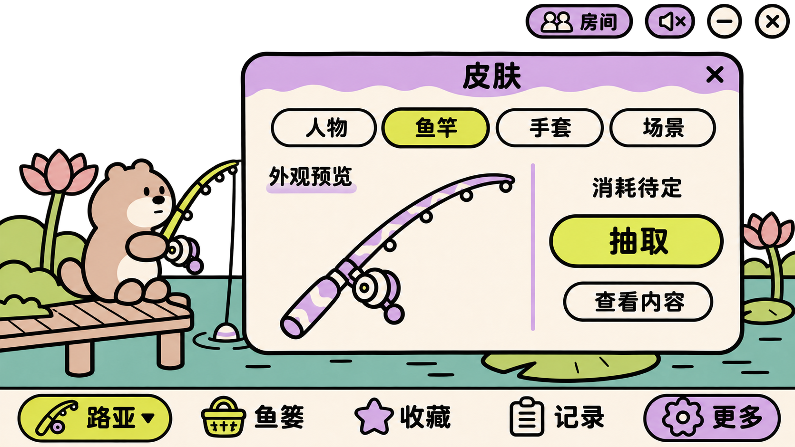
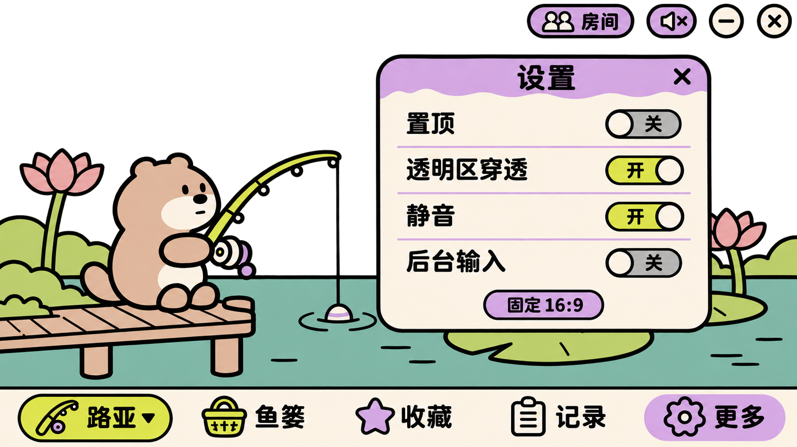
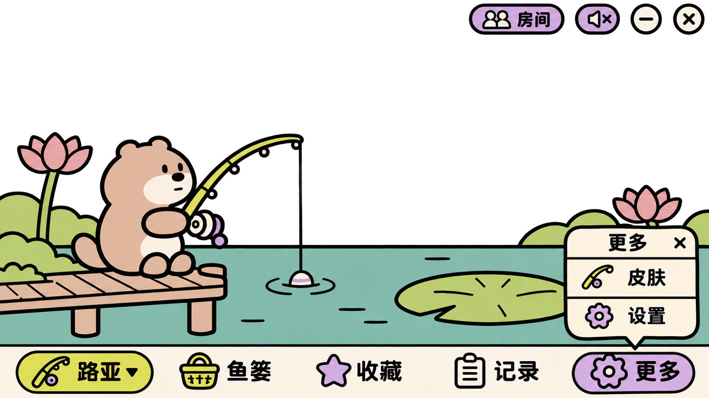

00｜透明主界面 · 鱼获提示

背景留白透明，底栏与鱼获卡保留实体底色；青绿水面、自然绿荷叶与粉色荷花。
按最新修改：留白透明、自然青绿荷塘、底栏与次级菜单不透明；移除左上文字、九点符号与整条顶栏底板。
下方每图按480×270 CSS尺寸显示，点击打开原PNG。背景切换仅帮助观察alpha，不是桌面穿透演示。生图原稿有极小宽高取整差异，正式窗口按16:9执行。
预览底色：

背景留白透明，底栏与鱼获卡保留实体底色；青绿水面、自然绿荷叶与粉色荷花。

三种玩法入口，展开后选择；是否可并行仍由玩法专题确定。

成员列表、邀请与离开入口；示例成员数量不是房间上限。

鱼获选择后可出售或放入收藏；售价保持待定。

鱼缸选择、背景预览与管理入口，容量和购买价格未定。

鱼种缩略图与最大尺寸记录，缩略图不代表真实比例。

四类外观与鱼竿预览，抽取消耗和概率尚未定。

置顶、透明区穿透、静音和后台输入的状态示意。

皮肤与设置入口；卡片不透明，卡片外继续透明。